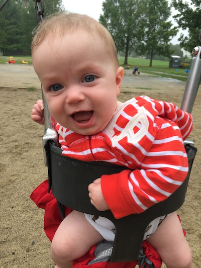
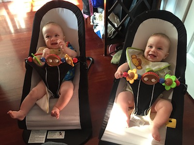
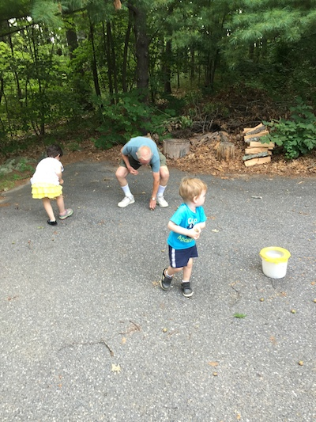
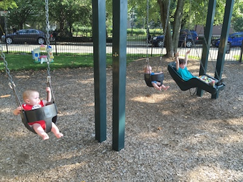
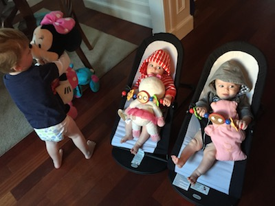
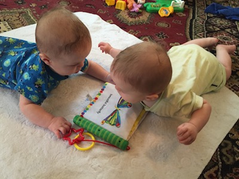
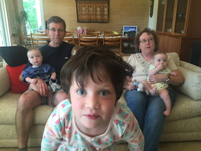
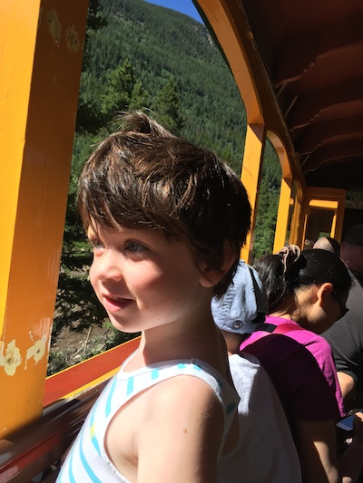
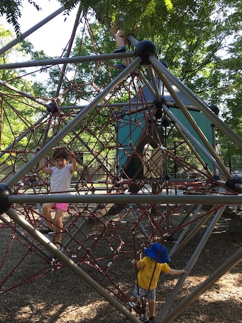

Youngins

The sky was thoroughly overcast but it had been thoroughly overcast all day. We set out. It started to drizzle. We said we'd see how it was doing after we stepped in for some donuts. We ate the donuts. We came back outside. Still drizzling. Maybe a little heavier now. A half block later it was coming down hard enough to be annoying but still light enough to be called drizzle. We pressed on. When we got to Magnolia park, there was one other boy and his mother there. Somehow we stayed for close to an hour and a half. Ezra pushed a toy lawn mower through wet grass. Bess did the zip line. Kyle and Tasman watched. We tried to build sand castles out of the damp sand. Failing that, we built a wall. Bess swung on the baby swings and asked if Tasman wanted to swing too. He couldn't say yes or no, but he did want to.

You never believe how much time has passed or how much things have changed. This week it was ninety degrees out and near one hundred percent humidity. When they were born there were well over five feet of snow in our front yard. It seems early to say who they are, but both Bess and Ezra were definitely Bess and Ezra at six months. Even younger probably. Caroline and I are convinced that Tasman knows what's going on. He's aware of everyone in the room, smiles at everyone, and laughs and makes noises at appropriate spots in the conversation. Kyle focuses more on whatever he's doing. If he's smiling at you, then he'll smile at you for all he's worth. If he's sticking his foot in his mouth, well, that's priority number one and he'll give it the proper attention. They both notice and watch each other regularly now. Who knows what the next six months hold.

What better way to celebrate your birthday than with that oldest of traditions: picking up acorns with your (great) grandchildren. Bess and Ezra thought it perfectly natural to climb out of the car and begin picking still-green acorns of the driveway. Grandpa Harold remembered how he paid Joanna and me a penny a piece and spent 'a fortune.' The kids did not think to ask for compensation, though they may have gotten it in the form of a walk to the pond and a healthy helping of cantaloupe.

Bess, Kyle, and Tasman swinging seriously. Off-camera: Ezra, who does not particularly like to swing. Kyle spent most of his time smiling at Bess. Tasman kept keeling forward. We had just driven from Colleen's in Medford (ice cream, running across the bridge). Took the big kids to the beach in the morning. Bess 'bungee' boarded on a penguin board in the shallow-but-rising water. Yesterday we went to the great-grandparent's house (acorn picking, a walk to the well and back), Drumlin Farm (tractor ride, pigs finally), and the pool (saw Nathan and Hazel). After the fullest of weekends, Ezra climbed up onto Caroline's lap at dinner, waited for a lull in the pandemonium, and suggested, 'eat all the ketchup!'

Gifts bestowed by Bess in the morning. She stuffed one toy into Kyle and Tasman's chairs. Not clear whether Ezra helped himself.

Caught these two taking turns with the crinkly caterpillar book just after I came home from work. At points in the minutes afterward they each had their hands on it (though Kyle really snatched it to start). They both think that if they lie on their bellies, raise all their limbs, and kick, they will be blessed with movement. Tasman really wants to crawl, you can tell.

Something must be happening off-camera, either my grandfather setting up the tripod or a large bat that has just made itself known in the house. Besseggen is peering close into the camera, covering up her brother behind her. Tonight we read A Trip Through the Human Body, which she enjoys and recalls more and more of. Ezra pulled the wagon on our after-dinner walk. Tasman laughed after he went down a baby slide at the park. Kyle smiled at me when he (well, he and Tasman and Caroline) met me for coffee.

Bess, looking out of a steam train on its way down from Silver Plume. She could take in both the view and the way the train was moving (especially on the uphill return, when it strained and we could see sparks under the belly of the engine). I can explain that the burning coal heats up the water and that the pressure of the steam drives pistons, but I would not be able to draw or build an engine of any sort. A fear for the day when we wake up and all our technology has disappeared. In another generation, how far will children's stories (about steam engines or passenger ships) diverge from the present? Not that, on a perfectly clear, dry day in the Rockies, that's anything to worry about.

This is the first time I've seen Ezra contemplate climbing these ropes, let alone touch them. A rare clear difference between days. Tonight he was saying 'I will lie down and close my eyes in a few minutes. I will go to sleep in a few minutes. You will go downstairs in a few minutes.' The sentences are complete, but not that much different from how he's talked for the last few months. Yet the conversation felt different from earlier. He tied together a sequence of events. And his estimate of 'a few minutes' turned out to be accurate, though he has no idea what a minute is.
the stowells august twentieth, two thousand fifteen